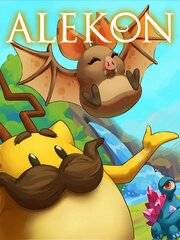

Alekon
Alekon
Details
|  | |
| Playtime | Not Played |
| Last Activity | Never |
| Added | 8/19/2023 14:50:26 |
| Modified | 8/19/2023 20:19:22 |
| Completion Status | Not Played |
| Library | Steam |
| Source | Steam |
| Platform | PC (Windows) |
| Release Date | 6/12/2021 |
| Community Score | |
| Critic Score | |
| User Score | |
| Genre | Adventure Arcade Indie Puzzle |
| Developer | The Alekon Company |
| Publisher | |
| Feature | Single Player |
| Links | Steam Official Discord Twitch Epic GOG |
| Tag | |
Description
Journey through your imagination to photograph whimsical creatures, known as fictions, each embodying a concept, from Rainy Day Magic to Micro Management.

Wander through the realms and interact with fictions in their environment to get them to strike collectable poses.

Fictions join you on Dream's Doorstep, where you can befriend them via unique quests and mini-games like tuning and playing crystal harps, organizing parties, and telling ghost stories.

Solve puzzles using various tools, from donuts, to magnets, to lantern-lighting fireflies.

Indulge your artistic side with creative toys like editing photos and designing snowflakes.

Features:

Values:
Wander through the realms and interact with fictions in their environment to get them to strike collectable poses.
Fictions join you on Dream's Doorstep, where you can befriend them via unique quests and mini-games like tuning and playing crystal harps, organizing parties, and telling ghost stories.
Solve puzzles using various tools, from donuts, to magnets, to lantern-lighting fireflies.
Indulge your artistic side with creative toys like editing photos and designing snowflakes.
Features:
- 50+ characters, each with unique personalities, dialogue, quests and collectable poses.
- Photography gameplay, with photo scores unlocking new levels to progress the game.
- Full free roaming movement, in addition to the classic on-rails experience.
- Unique quests and minigames, many involving photography, music, art, and dialogue.
- Puzzles, solved with tools like donut treats, movable magnets and throwable fireflies.
- An original soundtrack, inspired by Nintendo 64 classics.
Values:
- No time wasted. No fetch quests, grinding, unskippable cutscenes, or any way to lose progress, and each quest reward is a unique game mechanic or piece of content.
- Old soul, modern polish. Inspired by the magical adventures in games of old, we recreate that nostalgic vision while adhering to modern standards of UX and polish.
- Creative and non-violent. Our quests involve photography, art, and music instead of slaughtering boars, and fictions host parties for each other instead of fighting.